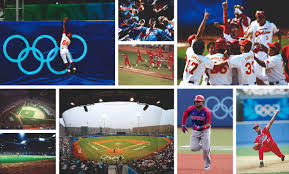
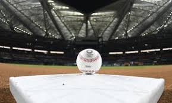
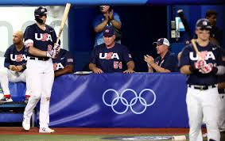
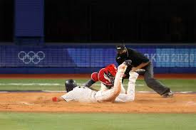
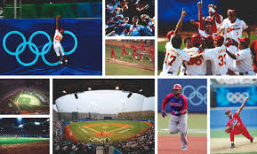
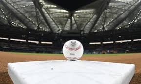
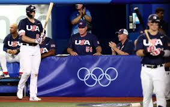
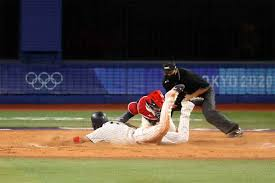

RESUMEN DEL BEISBOL
El béisbol ha sido un deporte olímpico desde 1992, aunque inicialmente solo estaba abierto a jugadores amateurs ¹ ². Posteriormente, se permitió la participación de jugadores profesionales, pero las Grandes Ligas de Béisbol no permitieron a sus jugadores participar. El béisbol fue eliminado de los Juegos Olímpicos después de la edición de 2008, pero regresó en Tokio 2020 debido a su popularidad en Japón ¹ ². El Comité Olímpico Internacional ha decidido incluir el béisbol en los Juegos Olímpicos de Los Ángeles 2028 ¹. El béisbol ha tenido una historia variada en los Juegos Olímpicos, con países como Cuba y Japón destacando en la competencia ¹ ³. Ganadores de béisbol en Juegos Olímpicos - Barcelona 1992: Cuba, que se impuso en la final a China Taipéi 11-1 ³ - Atlanta 1996: Cuba, que venció 13-9 a Japón ³ - Sidney 2000: Estados Unidos, que mostró su calidad como potencia al doblegar a Cuba 4-0 ³ - Atenas 2004: Cuba, que dio cuenta de Australia seis carreras por dos ³ - Beijing 2008: Corea del Sur, que fue el campeón tras ganar la medalla dorada a Cuba 3-2 ³
HISTORIA DEL BEISBOL
El béisbol es uno de los deportes disputados en los Juegos Olímpicos de verano, organizado por el Comité Olímpico Internacional y la Federación Internacional de Béisbol ¹. Aunque ha tenido una presencia intermitente, el béisbol regresará en los Juegos Olímpicos de Los Ángeles 2028 ¹ ². El béisbol debutó en los Juegos Olímpicos de San Luis 1904 como deporte de exhibición y tuvo su primera competencia oficial en los Juegos Olímpicos de Barcelona 1992 ¹ ³. Sin embargo, fue excluido del programa olímpico después de los Juegos Olímpicos de Pekín 2008, pero regresó en los Juegos Olímpicos de Tokio 2020 ¹ ². Cuba y Japón han sido los países más destacados en la competencia de béisbol en los Juegos Olímpicos, con Cuba obteniendo tres medallas de oro y Japón seis ¹. Estados Unidos también ha tenido un desempeño notable, con tres medallas de oro ¹. El béisbol y el softbol podrían hacer apariciones consecutivas en los Juegos Olímpicos, volviendo en Brisbane 2032, ya que Australia ha crecido mucho en ambas disciplinas ². Sin embargo, dicha presencia todavía necesita la confirmación del Comité Olímpico Internacional ². El béisbol regresó a los Juegos Olímpicos después de una ausencia de 13 años, y solo se disputó un torneo masculino con 6 equipos. Sin embargo, es importante destacar que el softbol, una variante del béisbol jugada principalmente por mujeres, sí tuvo una categoría femenina en los Juegos Olímpicos de Tokio 2020. El softbol regresó a los Juegos Olímpicos después de una ausencia de 13 años, y se disputó un torneo femenino con 6 equipos.
REGLAS DEL BEISBOL
El béisbol es uno de los deportes disputados en los Juegos Olímpicos de verano, organizado por el Comité Olímpico Internacional y la Federación Internacional de Béisbol ¹. Aunque ha tenido una presencia intermitente, el béisbol regresará en los Juegos Olímpicos de Los Ángeles 2028. Aquí te dejo las reglas básicas del béisbol olímpico: Objetivo del juego: El objetivo del juego es golpear una pelota con un bate, desplazando la pelota a través del campo y correr por el campo interno de tierra buscando alcanzar la mayor cantidad de bases posibles hasta dar la vuelta a la base desde donde se bateó para lograr anotar el tanto conocido como homecarrera ². Duración del juego: El equipo que anote más carreras al cabo de los 9 episodios, llamados innings que dura el encuentro, es el que resulta ganador ². Participantes: El béisbol ha sido disputado extraoficialmente desde 1904, desde entonces en 12 olimpiadas como deporte de exhibición. En total han participado 17 países, de los cuatro torneos olímpicos donde se entregaron medallas, entre los cuales se destacan Cuba, y Japón, que han aparecido en todos los torneos ¹. Diferencias con el sóftbol: Aunque hay campeonatos mundiales masculinos y femeninos en ambos deportes, a nivel olímpico el béisbol ha sido un deporte exclusivamente masculino, mientras que el sóftbol ha sido un deporte exclusivamente femenino. Hay diferencias en el número de jugadores de cada equipo entre los dos deportes, en el tamaño del campo y en algunas reglas ³.
PROGRAMACION OLIMPICOS DEL BEISBOL 2020
El béisbol en los Juegos Olímpicos de Tokio 2020 se llevó a cabo en el Estadio de Yokohama y el Estadio de Béisbol de Fukushima Azuma del 28 de julio al 7 de agosto de 2021 ¹. Seis equipos calificaron para el torneo: Japón, Estados Unidos, República Dominicana, Corea del Sur, México e Israel ¹. Calendario de juegos ¹: - 28 de julio, 12:00: República Dominicana vs. Japón - 29 de julio, 19:00: Israel vs. Corea del Sur - 30 de julio, 12:00: México vs. República Dominicana - 30 de julio, 19:00: Estados Unidos vs. Israel - 31 de julio, 12:00: Japón vs. México - 31 de julio, 19:00: Corea del Sur vs. Estados Unidos Ronda eliminatoria ¹: - Juego 7: Israel vs. Corea del Sur - Juego 8: República Dominicana vs. Israel - Juego 9: Estados Unidos vs. Japón - Juego 10: Corea del Sur vs. Estados Unidos - Juego 11: República Dominicana vs. Estados Unidos - Juego 12: Japón vs. Corea del Sur - Juego 13: Estados Unidos vs. Corea del Sur (por el bronce) - Juego 14: Japón vs. Estados Unidos (por el oro)
CUADRO DE HONOR "MEDALLERO DEL BEISBOL EN LOS JUEGOS OLIMPICOS 2020"
- Oro: Japon
- Plata: Estados Unidos
- Bronce: Republica Dominicana
VIDEO
GALERIA DE IMAGENES DEL BEISBOL
 







CUESTIONARIO DEL BEISBOL EN LOS JUEGOS OLIMPICOS
Juego de Béisbol Avanzado
Instrucciones: Haz clic en el bate para golpear la pelota. Consigue puntos solo si la pelota está en la línea divisoria central. Pierdes un punto si dejas pasar la pelota.